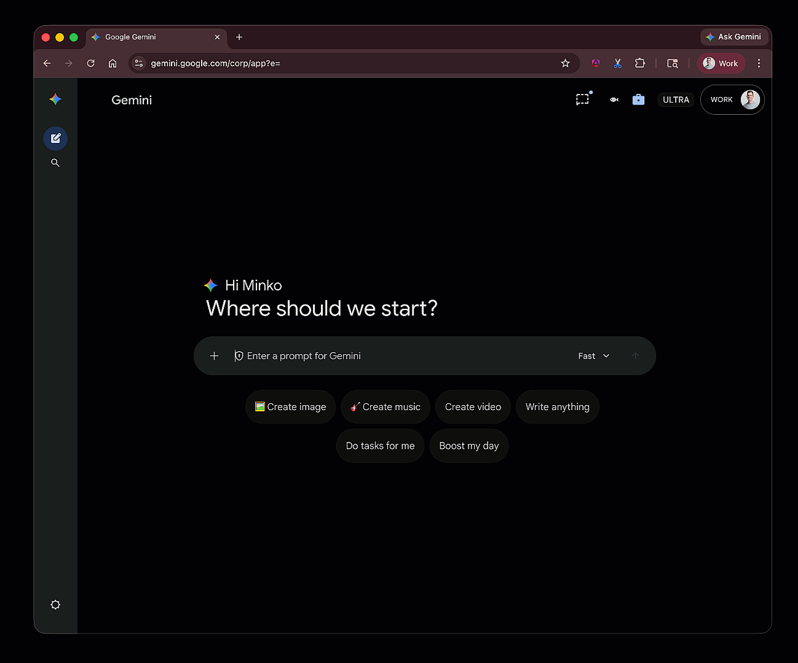
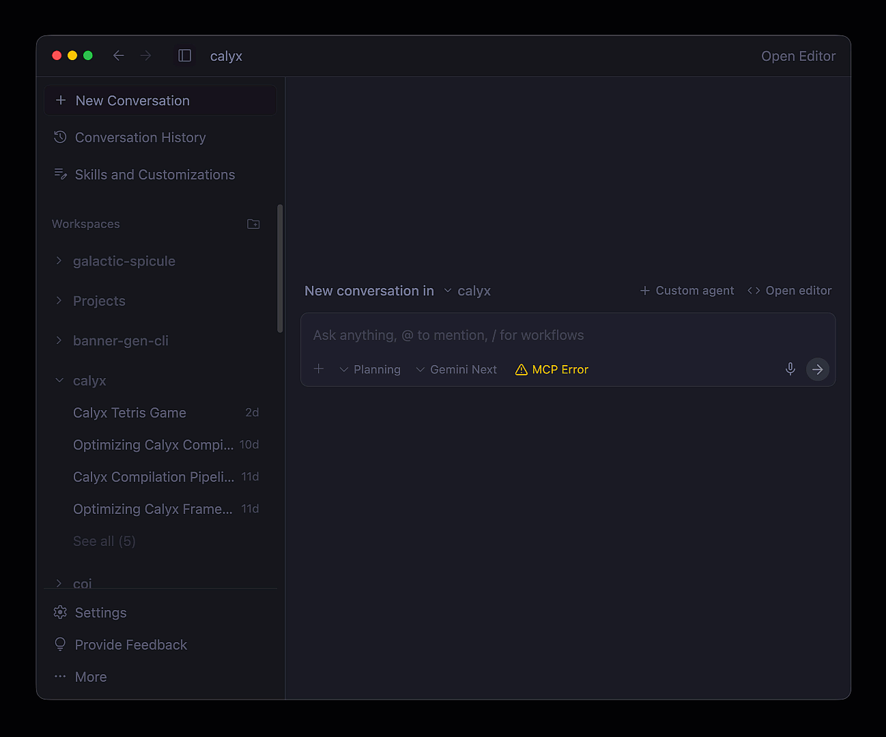
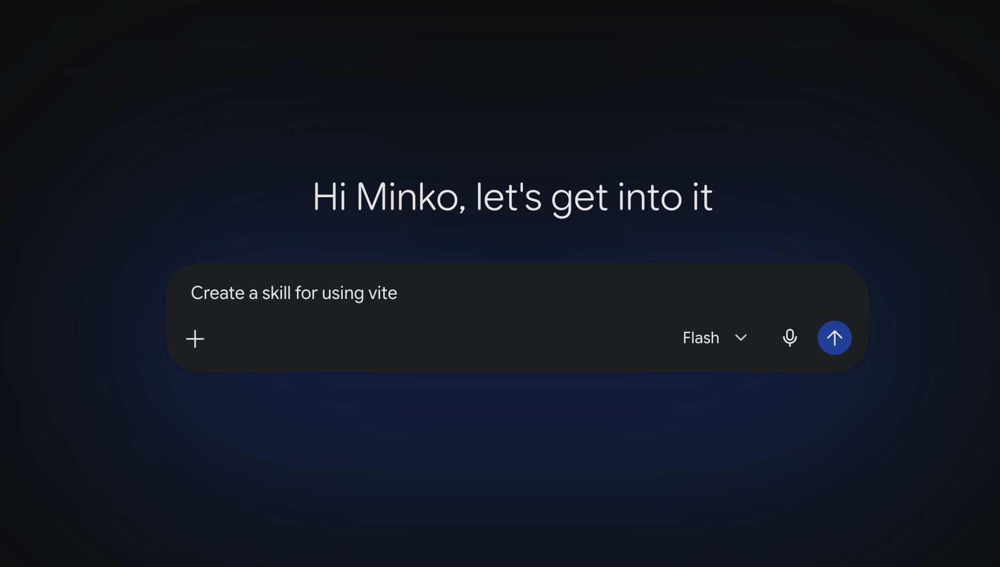
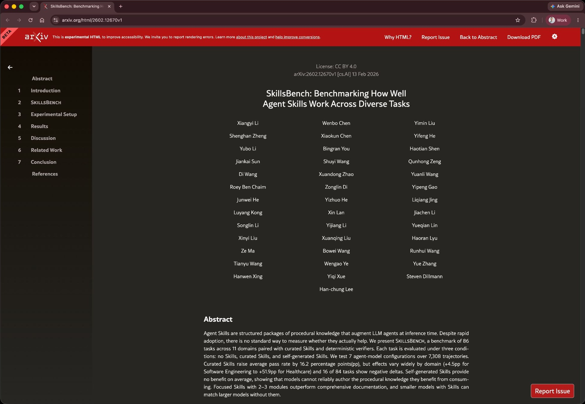
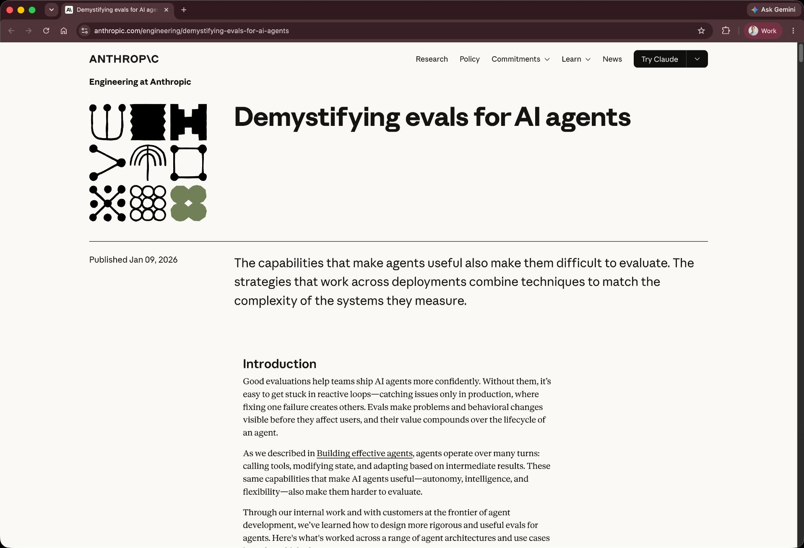

Skill Design
for LLM Agents
Writing good skills that actually work
Minko Gechev
Agentic systems


How agents work?
How agents work?Model Context Protocol
Common agent architectures
- ReAct (Reason + Act) - agent loops between thought generation, action, and observation until the goal is met.
- Plan-and-Execute - agent creates a full, multi-step plan upfront and adjusts it while executing each task.
- Reflexion (Self-Correction) - agent evaluates its performance post-task, using internal feedback to improve future attempts.
- State Machine-Based Agents - agent's reasoning and tool use are strictly confined by a predefined flowchart, ensuring reliable execution.
- Hybrid - popular agents often include a mixture of the architectures from above
Simplified ReAct loop
user_prompt := get_user_prompt() context := user_prompt + system_instructions while true { tools := get_available_tools() response := ask_llm_what_to_do(tools, context) if response.done { break } if response.tool_calls { result := call_tools(response.tool_calls) } context := context + result }
Simplified ReAct loop
user_prompt := get_user_prompt() context := user_prompt + system_instructions while true { tools := get_available_tools() response := ask_llm_what_to_do(tools, context) if response.done { break } if response.tool_calls { result := call_tools(response.tool_calls) } context := context + result }
Simplified ReAct loop
user_prompt := get_user_prompt() context := user_prompt + system_instructions while true { tools := get_available_tools() response := ask_llm_what_to_do(tools, context) if response.done { break } if response.tool_calls { result := call_tools(response.tool_calls) } context := context + result }
Simplified ReAct loop
user_prompt := get_user_prompt() context := user_prompt + system_instructions while true { tools := get_available_tools() response := ask_llm_what_to_do(tools, context) if response.done { break } if response.tool_calls { result := call_tools(response.tool_calls) } context := context + result }
Simplified ReAct loop
user_prompt := get_user_prompt() context := user_prompt + system_instructions while true { tools := get_available_tools() response := ask_llm_what_to_do(tools, context) if response.done { break } if response.tool_calls { result := call_tools(response.tool_calls) } context := context + result }
Simplified ReAct loop
user_prompt := get_user_prompt() context := user_prompt + system_instructions while true { tools := get_available_tools() response := ask_llm_what_to_do(tools, context) if response.done { break } if response.tool_calls { result := call_tools(response.tool_calls) } context := context + result }
Simplified ReAct loop
user_prompt := get_user_prompt() context := user_prompt + system_instructions while true { tools := get_available_tools() response := ask_llm_what_to_do(tools, context) if response.done { break } if response.tool_calls { result := call_tools(response.tool_calls) } context := context + result }
Simplified ReAct loop
user_prompt := get_user_prompt() context := user_prompt + system_instructions while true { tools := get_available_tools() response := ask_llm_what_to_do(tools, context) if response.done { break } if response.tool_calls { result := call_tools(response.tool_calls) } context := context + result }
Making agents more powerfulnon-exhaustive list
Making agents more powerfulnon-exhaustive list
Making agents more powerfulnon-exhaustive list
Making agents more powerful
…while avoiding context rot
CLI vs MCP
- Context preservation - no context bloat through JSON schemas
- Auth and permissions - leverage existing user credentials and SSO
- Zero infra overhead - no local background child processes
- Human-in-the-loop debugging - easy to debug since they run in user context and are simple binaries
Agent skills
Specific procedural instructions for the agent how to do a task
How do skills work?
skills := get_available_skills() response := ask_llm_for_skills(skills, context) if response.skills { result := read_skills(response.skills) } context := context + result
How do skills work?
skills := get_available_skills() response := ask_llm_for_skills(skills, context) if response.skills { result := read_skills(response.skills) } context := context + result

Skills are unnecessary if the agent already possesses the capability
Five Best Practices for Agent Skills
01. Procedural Instructions
"To run tests, first check if npm is installed. You can look for package.json. If yarn is used, run yarn. If npm is used, run npm. It is generally better to run npm ci to make sure dependencies match."
2. If yarn.lock is present, execute:
yarn install --frozen-lockfile
3. If only package.json is present, execute:
npm ci
4. Execute: npm test
02. Frontmatter Optimization
03. Progressive Disclosure
├── SKILL.md # Plan under 500 lines
├── scripts/ # Execution scripts
│ └── run-karma.sh
├── references/ # Static configuration details
│ └── test-configs.md
└── assets/ # Structured templates
Increases latency and execution cost. High risk of key instruction dilution inside the LLM context window.
Maintains rapid response times and accuracy. Dynamic reference loading is deferred until explicitly needed.
04. Repetitive Task Scripting
To run the migration:
1. Search: grep -rl "Karma" ./src
2. Replace: sed -i 's/Karma/Jest/g' ./config
3. Set env: export TEST_ENV=prod
4. Verify: node ./scripts/build-check.js
Listing manual commands inside the skill file increases parser mistakes and points of failure.
To run the migration, execute the wrapper script:
./scripts/migrate-tests.sh --env=prod
Wrapping the multi-step sequence in a modular script guarantees reliable and atomic execution.
05. Skill Composition
- Use high-level entry points to conditionally trigger targeted sub-skills.
- Allows clean routing paths instead of consolidating all logic in one document.
- Keeps individual skills focused, modular, and easy to maintain.
Skills versus scripts
Testing skills
- Ensures a skill is useful
- Prevent regression
- Removal of unused skills
- Hill-climbing
Agentic testing pyramid
compositions (e2e tests)
(composition of
skills & CLIs) (integration tests)
Agentic testing pyramid
compositions (e2e tests)
(composition of
skills & CLIs) (integration tests)



Skill evals
- Identify goals - based on your skills identify goals for your agent
- Create tasks - provide "assignments" with context to achieve the goals
- Run trials - run 5-30 executions of the workflow
- Grade
- Script grader - code evaluates the "state of the world"
- LLM grader - model grades the "trajectory"
- Human grader - looks at the output (we'll ignore this for now)
skillgrade
"Unit tests" for your agent skills
How to create evals?
- Provide API key as env var
- Skillgrade will autogen evals
- Run and report results